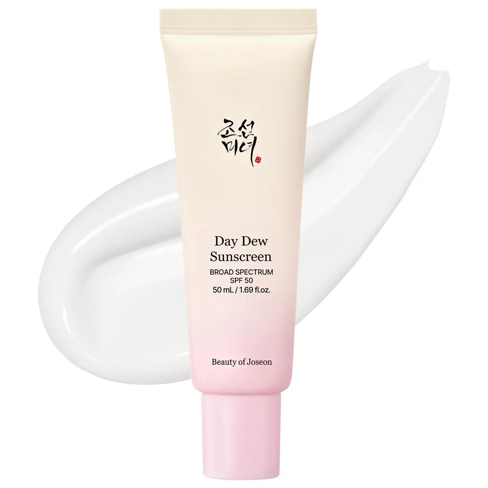
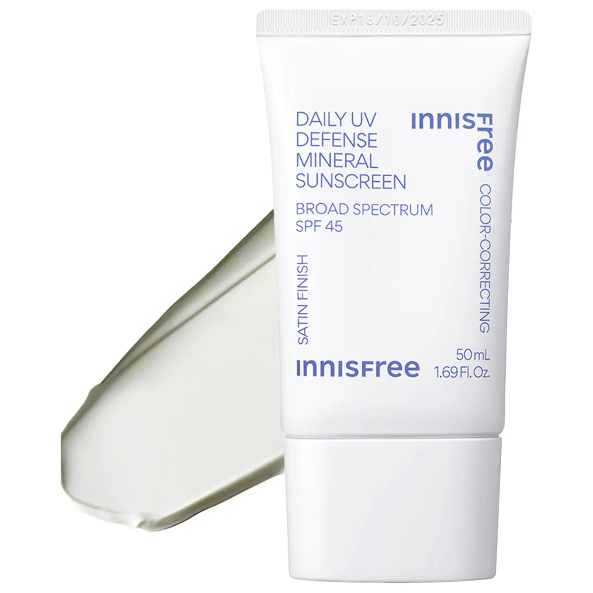

Five acne-safe sunscreens that don't break me out and don't make me dread applying them. For everyday, for makeup application, and for days at the beach.
I have had such a love-hate relationship with sunscreens over the years. As I've gotten older I've made a concerted effort to wear sunscreen everyday, including days I won't be explicitly spending time outside, but that led me to hate them more than love them. From dry formulas, white casts, and clogged pores I thought I would never find a sunscreen that worked for me. But after trial and error with so many, I'm finally finding a rotation of sunscreens that I actually enjoy wearing daily.
Versed

The Versed Daily Sunscreen is newer in my lineup but has quickly become my favorite. I reach for it everyday, whether I'm wearing makeup or not because the serum like texture and clear application are no-brainers to make sure my skin looks like skin, it's hyrdrated, and most importantly, protected. At $19 it's one of the most affordable on the list and a great intro to daily sunscreen use if you're hesitant.
Beauty of Joeson

Beauty of Joeson's skincare focused Day Dew Sunscreen was the first sunscreen I actually wanted to, and did repurchase. The lightweight texture and hydration felt great on my skin, and despite it being a white formula, it blended in seamlessly with no white cast.
The Ordinary

The Ordinary has proved itself to be a go-to for simplified, no-gimicks products at an affordable price and this especially applies to their UV Filters SPF 45 Serum Sunscreen PA++++. Offering the highest level of protection from UVA rays (that's the PA++++), I love wearing this sunscreen on days I'm not planning to wear any makeup. Again with a serumy-like texture and dewy finish, this sunscreen blends seamlessly into my skin leaving no white cast.
Dr. Jart+

Dr. Jart+'s Every Sun Day sunscreen showed me that sunscreen can be protective and comfortable on the skin. The lightweight liquid formula blends beautifully, leaving a natural radiant finish. It's so good that my boyfriend and brother-in-law both purchased it after trying mine. While it is the most expensive on the list at $45 a bottle, it's well worth it if you are someone who typically hates sunscreens and/or finds them to be too heavy.
Innisfree

If you prefer a mineral sunscreen that won't break you out and offers a redness neutralizing green tint, try the Innisfree Daily UV Mineral Sunscreen SPF 45. It works for both face and body and has a satin finish so you don't have to worry as much about it looking greasy if you're on the oilier side.
How I'd Wear Them:




